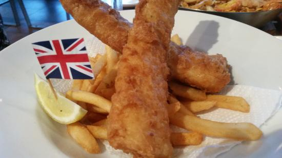
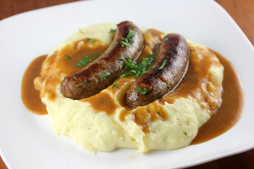
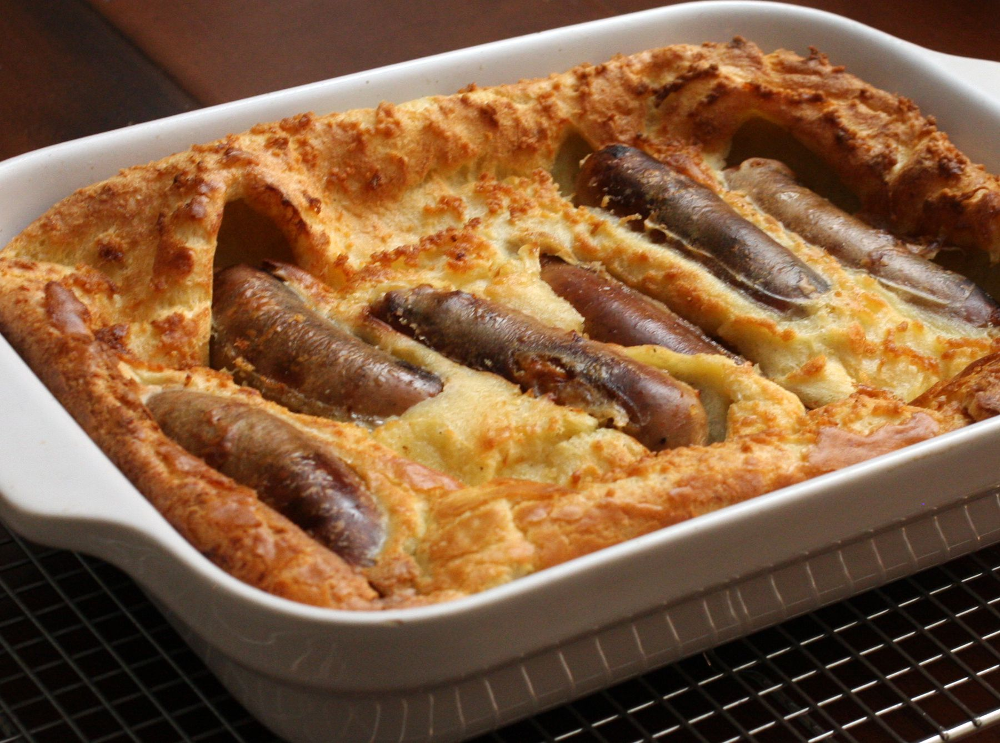

Hola bienvenidos al menu de platillos de Inglaterra.
Platillo |
Imagen |
Informacion |
| 1-Fish and Chips. |
 | Uno de los alimentos más típicos de Inglaterra es el plato tradicional de pescado con papas fritas, muy comunes y populares. Esta receta es tan viejo que es difícil saber exactamente cuál es su origen. Se trata de un empanado pescado, frito y sazonado con sal y vinagre de malta. Para seguir, un montón de patatas fritas. |
|
2-Bangers and Mash.
|  |
Este es otro plato típico inglés, que consiste en salchichas y puré de patatas, se puede encontrar en diferentes versiones. Se pueden preparar en un tipo de salchicha más picante, herbal o de otras variedades. Esta comida se sirve generalmente con una salsa de cebolla. Durante su viaje en Londres no deje de probar esta comida típica de Inglaterra. |
|
3-Toad in the hole.
|
 |
Otro plato típico de Inglaterra es esta receta con salchichas y pasta. Puede ser servido con cebolla roja y salsa. |